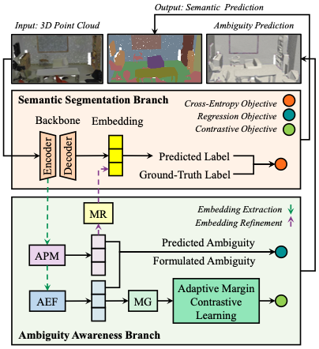

|
Yang Chen I am a Ph.D. student at Nanyang Technological University. My research interests revolve around 3D computer vision and deep learning. |

|
Publications |
|  |
Ambiguity-aware Point Cloud Segmentation by Adaptive Margin Contrastive Learning
Yang Chen, Yueqi Duan, Haowen Sun, Jiwen Lu, Yap-Peng Tan IEEE Transactions on Multimedia (TMM), 2025 [PDF] [Code] We propose AMContrast3D++ integrating with two branches trained in parallel, where a novel ambiguity prediction module concurrently learns point ambiguities from generated embeddings. |

|
Boundary Voting Network for Ambiguity-aware Timestamp-supervised Action Segmentation
Runzhong Zhang, Yueqi Duan, Yang Chen, Weipeng Hu, Chen Cai, Suchen Wang, Yap-Peng Tan IEEE Transactions on Circuits and Systems for Video Technology (TCSVT), 2025 [PDF] In this paper, we introduce the boundary voting network that mitigates feature ambiguity by hierarchically propagating video-level global prior knowledge into local action-transiting regions. |

|
Adaptive Margin Contrastive Learning for Ambiguity-aware 3D Semantic Segmentation
Yang Chen, Yueqi Duan, Runzhong Zhang, Yap-Peng Tan IEEE International Conference on Multimedia and Expo (ICME), 2024 (Oral Presentation) [PDF] [Code] We propose an adaptive margin contrastive learning method for 3D point cloud semantic segmentation, namely AMContrast3D. We design adaptive objectives for individual points based on their ambiguity levels, aiming to ensure the correctness of low-ambiguity points while allowing mistakes for high-ambiguity points. |
Academic Services |
|
Feel free to steal this website's source code. Do not scrape the HTML from this page itself, as it includes analytics tags that you do not want on your own website — use the github code instead. Also, consider using Leonid Keselman's Jekyll fork of this page. |